Last updated: 2015-10-27
Code version: f4be18c104f70809fbbd1acf23293745e7a0e69d
Based on the data filtered of PC1, we computed CVs of each individual and identified genes of high/low coefficients of variation.
library("data.table")
library("dplyr")
library("limma")
library("edgeR")
library("ggplot2")
library("grid")
theme_set(theme_bw(base_size = 12))
source("functions.R")Input annotation of only QC-filtered single cells. Remove NA19098.r2
anno_qc <- read.table("../data/annotation-filter.txt", header = TRUE,
stringsAsFactors = FALSE)
is_include <- anno_qc$batch != "NA19098.r2"
anno_qc_filter <- anno_qc[which(is_include), ]Import endogeneous gene molecule counts that are QC-filtered, CPM-normalized, ERCC-normalized, and also processed to remove unwanted variation from batch effet. ERCC genes are removed from this file.
molecules_ENSG <- read.table("../data/molecules-final.txt", header = TRUE, stringsAsFactors = FALSE)
molecules_ENSG <- molecules_ENSG[ , is_include]Input moleclule counts before log2 CPM transformation. This file is used to compute percent zero-count cells per sample.
molecules_sparse <- read.table("../data/molecules-filter.txt", header = TRUE, stringsAsFactors = FALSE)
molecules_sparse <- molecules_sparse[grep("ENSG", rownames(molecules_sparse)), ]
stopifnot( all.equal(rownames(molecules_ENSG), rownames(molecules_sparse)) )library(matrixStats)
centered_ENSG <- molecules_ENSG - rowMeans(molecules_ENSG)
svd_all <- svd( centered_ENSG )
filtered_data <- with(svd_all, u %*% diag( c(0, d[-1]) ) %*% t(v))cv_filtered <- lapply(1:3, function(ii_individual) {
individuals <- unique(anno_qc_filter$individual)
counts <- filtered_data[ , anno_qc_filter$individual == individuals [ii_individual]]
means <- apply(counts, 1, mean)
sds <- apply(counts, 1, sd)
cv <- sds/means
return(cv)
})
names(cv_filtered) <- unique(anno_qc_filter$individual)
cv_filtered <- do.call(cbind, cv_filtered)par(mfrow = c(2,2))
plot(x = cv_filtered[,1], y = cv_filtered[,2], pch = 16, cex = .6)
plot(x = cv_filtered[,3], y = cv_filtered[,2], pch = 16, cex = .6)
plot(x = cv_filtered[,1], y = cv_filtered[,3], pch = 16, cex = .6)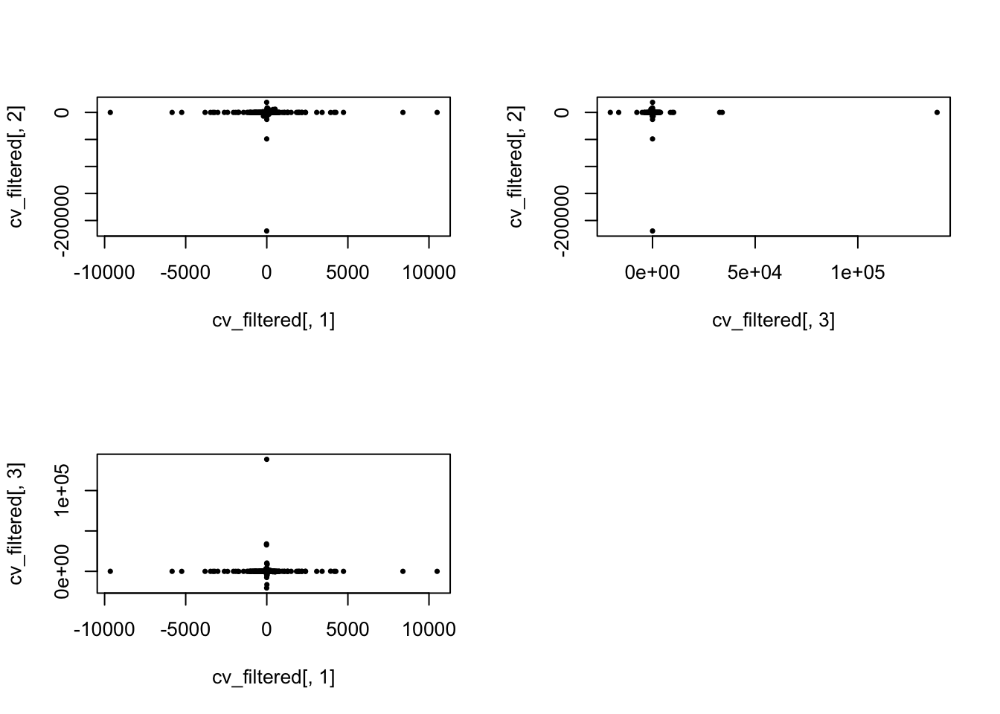
High CVs
No genes with CV high in all individuals.
means_cv <- mean(unlist(cv_filtered))
sds_cv <- sd(unlist(cv_filtered))
ii_high_2 <- lapply(1:3, function(ii_individual) {
which(cv_filtered[ ,ii_individual] > means_cv + 2*sds_cv) })
length(Reduce(intersect, ii_high_2))[1] 0length(Reduce(union, ii_high_2))[1] 27ii_high_all <- Reduce(union, ii_high_2)
par(mfrow = c(2,2))
plot(x = cv_filtered[,1], y = cv_filtered[,2], pch = 16, cex = .6,
xlim = c(0, max(cv_filtered[,1])), ylim = c(0, max(cv_filtered[,2])))
points(x = cv_filtered[ii_high_all, 1],
y = cv_filtered[ii_high_all, 2], pch = 1, cex = .8, col = "red")
plot(x = cv_filtered[,3], y = cv_filtered[,2], pch = 16, cex = .6,
xlim = c(0, max(cv_filtered[,3])), ylim = c(0, max(cv_filtered[,2])))
points(x = cv_filtered[ii_high_all, 3],
y = cv_filtered[ii_high_all, 2], pch = 1, cex = .8, col = "red")
plot(x = cv_filtered[,1], y = cv_filtered[,3], pch = 16, cex = .6,
xlim = c(0, max(cv_filtered[,1])), ylim = c(0, max(cv_filtered[,3])))
points(x = cv_filtered[ii_high_all, 1],
y = cv_filtered[ii_high_all, 3], pch = 1, cex = .8, col = "red")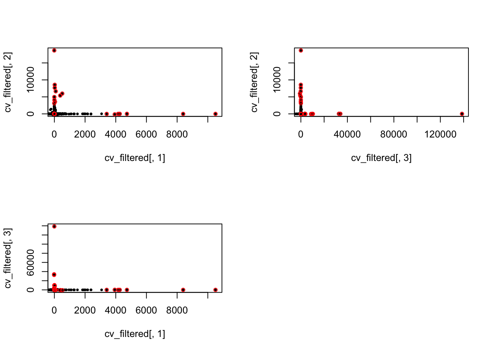
Outliers..
par(mfrow = c(2,2))
plot(density(filtered_data[ which.max(cv_filtered[,1]),
anno_qc_filter$individual == "NA19098"]))
plot(density(filtered_data[ which.max(cv_filtered[,2]),
anno_qc_filter$individual == "NA19101"]))
plot(density(filtered_data[ which.max(cv_filtered[,3]),
anno_qc_filter$individual == "NA19239"]))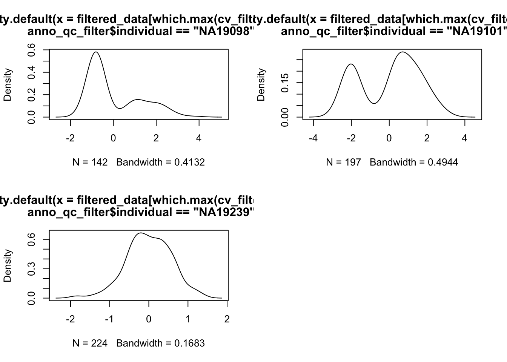
Low CVs
No genes with CV high in all individuals.
means_cv <- mean(unlist(cv_filtered))
sds_cv <- sd(unlist(cv_filtered))
ii_low_2 <- lapply(1:3, function(ii_individual) {
which(cv_filtered[ ,ii_individual] < means_cv - 2*sds_cv) })
length(Reduce(intersect, ii_low_2))[1] 0length(Reduce(union, ii_low_2))[1] 31ii_low_all <- Reduce(union, ii_low_2)
par(mfrow = c(2,2))
plot(x = cv_filtered[,1], y = cv_filtered[,2], pch = 16, cex = .6,
xlim = c(0, max(cv_filtered[,1])), ylim = c(0, max(cv_filtered[,2])))
points(x = cv_filtered[ii_low_all, 1],
y = cv_filtered[ii_low_all, 2], pch = 1, cex = .8, col = "red")
plot(x = cv_filtered[,3], y = cv_filtered[,2], pch = 16, cex = .6,
xlim = c(0, max(cv_filtered[,3])), ylim = c(0, max(cv_filtered[,2])))
points(x = cv_filtered[ii_low_all, 3],
y = cv_filtered[ii_low_all, 2], pch = 1, cex = .8, col = "red")
plot(x = cv_filtered[,1], y = cv_filtered[,3], pch = 16, cex = .6,
xlim = c(0, max(cv_filtered[,1])), ylim = c(0, max(cv_filtered[,3])))
points(x = cv_filtered[ii_low_all, 1],
y = cv_filtered[ii_low_all, 3], pch = 1, cex = .8, col = "red")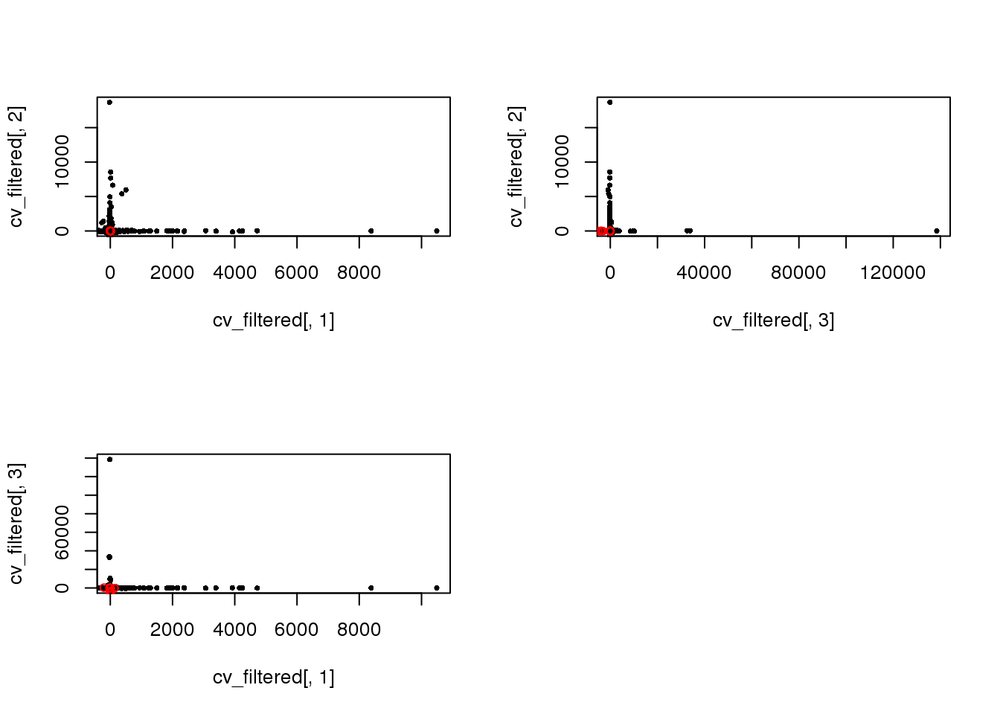
Outliers..
par(mfrow = c(2,2))
plot(density(filtered_data[ which.min(cv_filtered[,1]),
anno_qc_filter$individual == "NA19098"]))
plot(density(filtered_data[ which.min(cv_filtered[,2]),
anno_qc_filter$individual == "NA19101"]))
plot(density(filtered_data[ which.min(cv_filtered[,3]),
anno_qc_filter$individual == "NA19239"]))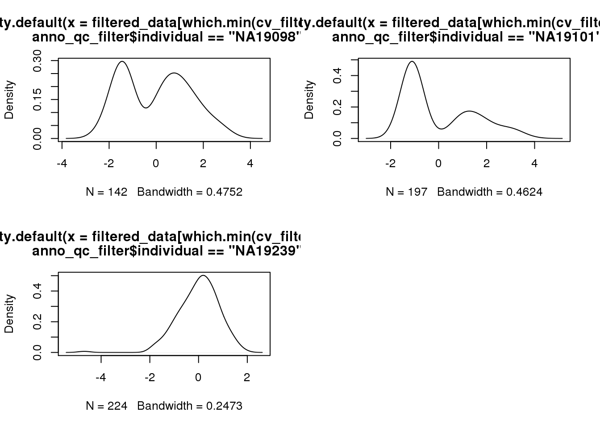
Compute CV before filtering PC1
cv_data <- lapply(1:3, function(ii_individual) {
individuals <- unique(anno_qc_filter$individual)
counts <- molecules_ENSG[ , anno_qc_filter$individual == individuals [ii_individual]]
means <- apply(counts, 1, mean)
sds <- apply(counts, 1, sd)
cv <- sds/means
return(cv)
})
names(cv_data) <- unique(anno_qc_filter$individual)
cv_data <- do.call(cbind, cv_data)
par(mfrow = c(2,2))
plot(x = cv_data[,1], y = cv_data[,2], pch = 16, cex = .6,
xlim = c(0, 1), ylim = c(0, 1))
plot(x = cv_data[,3], y = cv_data[,2], pch = 16, cex = .6,
xlim = c(0, 1), ylim = c(0, 1))
plot(x = cv_data[,1], y = cv_data[,3], pch = 16, cex = .6,
xlim = c(0, 1), ylim = c(0, 1))
title(main = "CV before PC1 removal", outer = TRUE, line = -1)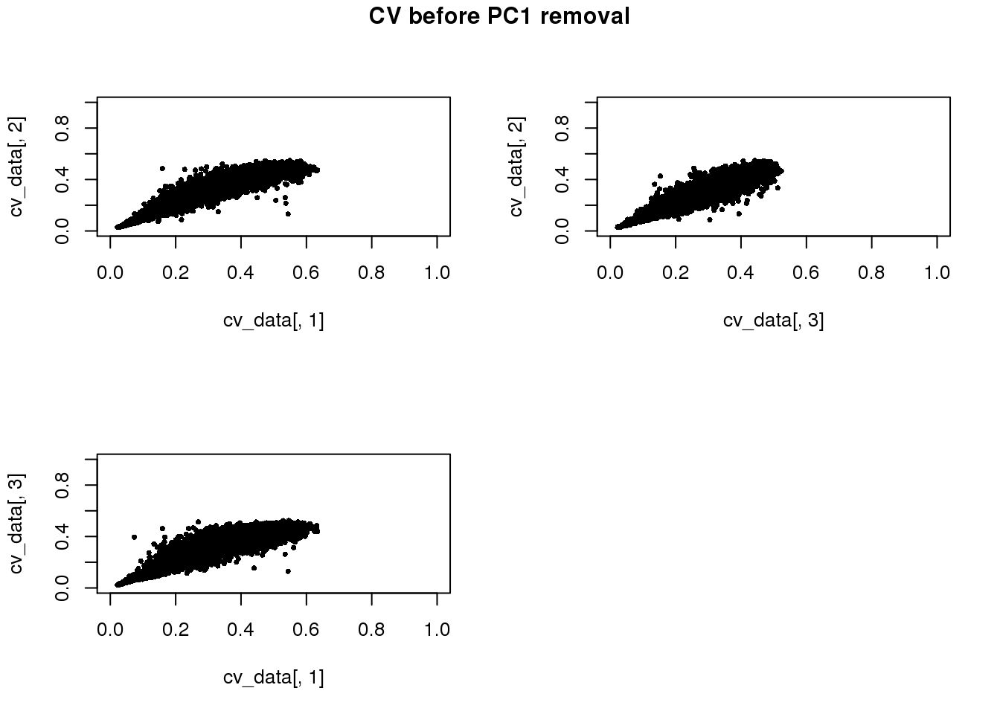
Mean gene expression level before removing PC1.
means_data <- lapply(1:3, function(ii_individual) {
individuals <- unique(anno_qc_filter$individual)
counts <- molecules_ENSG[ , anno_qc_filter$individual == individuals [ii_individual]]
means <- apply(counts, 1, mean)
return(means)
})
names(means_data) <- unique(anno_qc_filter$individual)
means_data <- do.call(cbind, means_data)
par(mfrow = c(2,2))
plot(x = means_data[,1], y = means_data[,2], pch = 16, cex = .6)
plot(x = means_data[,3], y = means_data[,2], pch = 16, cex = .6)
plot(x = means_data[,1], y = means_data[,3], pch = 16, cex = .6)
title(main = "Means before PC1 removal", outer = TRUE, line = -1)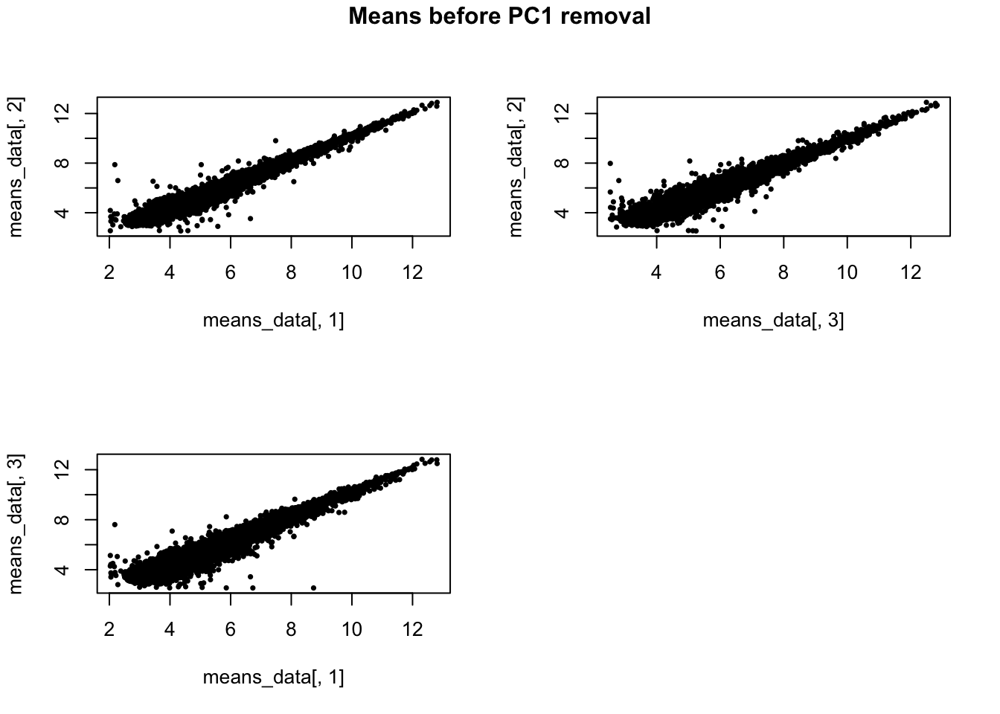
if (file.exists("rda/svd-filtered-high-low/go-high.rda")) {
load("rda/svd-filtered-high-low/go-high.rda")
} else {
library(Humanzee)
go_high <- lapply(1: 3, function(ii_individual) {
go_list <- GOtest(my_ensembl_gene_universe = rownames(molecules_ENSG),
my_ensembl_gene_test = rownames(molecules_ENSG)[ii_high_2[[ii_individual]]],
pval_cutoff = 1, ontology=c("BP","CC","MF") )
# Biological process
goterms_bp <- summary(go_list$GO$BP, pvalue = 1)
goterms_bp <- data.frame(ID = goterms_bp[[1]],
Pvalue = goterms_bp[[2]],
Terms = goterms_bp[[7]])
goterms_bp <- goterms_bp[order(goterms_bp$Pvalue), ]
# Cellular component
goterms_cc <- summary(go_list$GO$CC, pvalue = 1)
goterms_cc <- data.frame(ID = goterms_cc[[1]],
Pvalue = goterms_cc[[2]],
Terms = goterms_cc[[7]])
goterms_cc <- goterms_cc[order(goterms_cc$Pvalue), ]
# Molecular function
goterms_mf <- summary(go_list$GO$MF, pvalue = 1)
goterms_mf <- data.frame(ID = goterms_mf[[1]],
Pvalue = goterms_mf[[2]],
Terms = goterms_mf[[7]])
goterms_mf <- goterms_mf[order(goterms_mf$Pvalue), ]
return(list(goterms_bp = goterms_bp,
goterms_cc = goterms_cc,
goterms_mf = goterms_mf))
})
save(go_high, file = "rda/svd-filtered-high-low/go-high.rda")
}Use REVIGO to summarize and visualize GO terms…
The size of the node indicates the p-vlaue of the GO term. The width of the edges indicates degree of similarity between the GO terms.
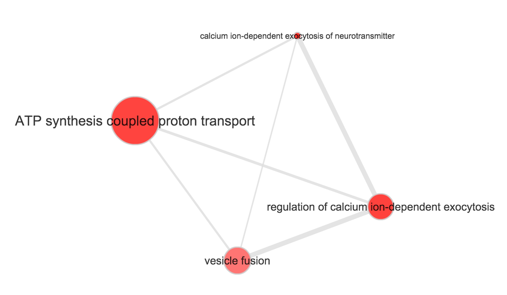
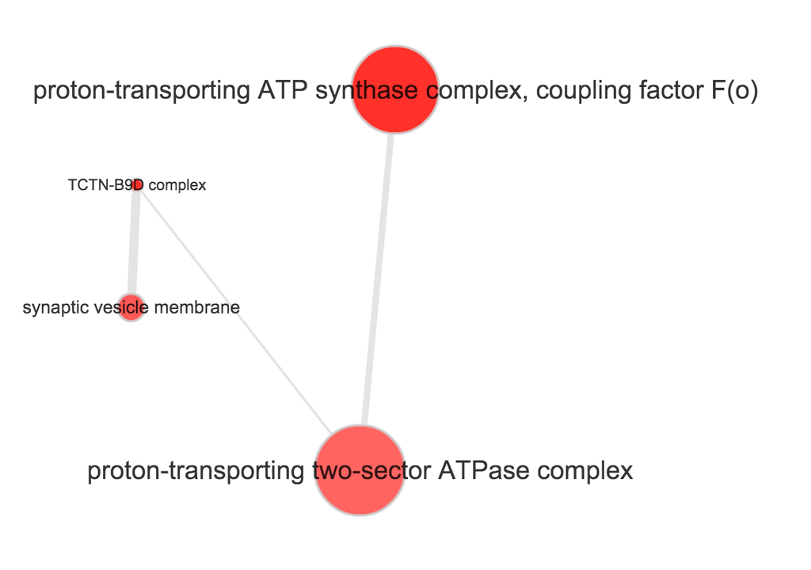
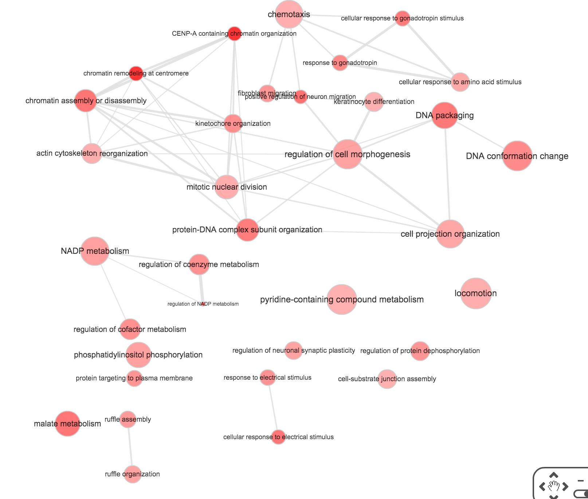
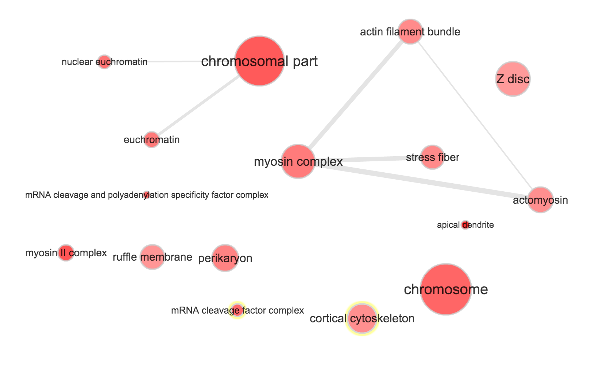
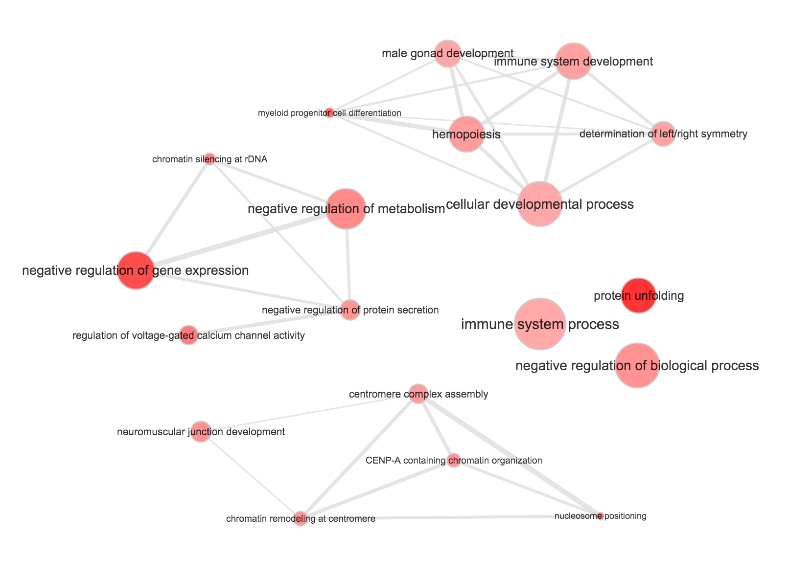
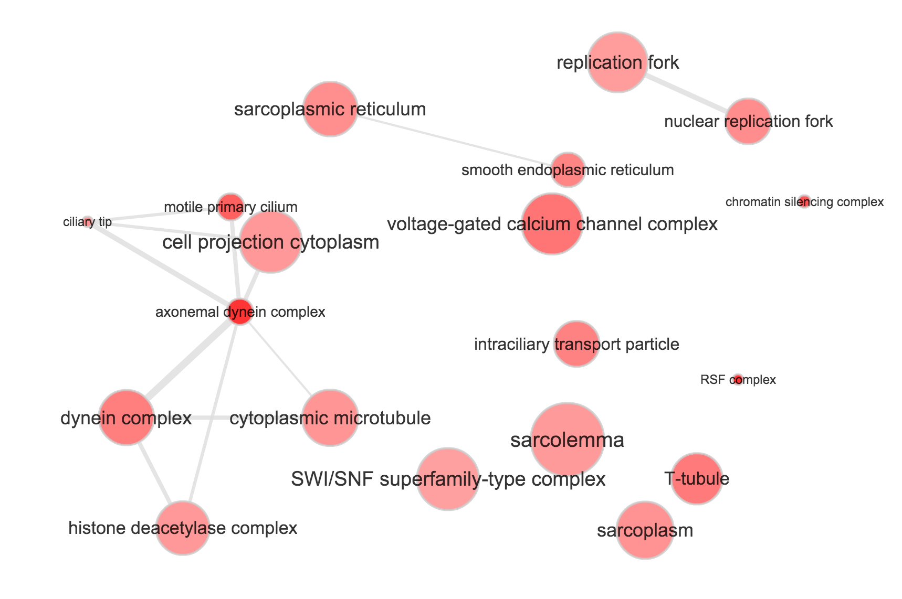
if (file.exists("rda/svd-filtered-high-low/go-low.rda")) {
load("rda/svd-filtered-high-low/go-low.rda")
} else {
library(Humanzee)
go_low <- lapply(1: 3, function(ii_individual) {
go_list <- GOtest(my_ensembl_gene_universe = rownames(molecules_ENSG),
my_ensembl_gene_test = rownames(molecules_ENSG)[ii_low_2[[ii_individual]]],
pval_cutoff = 1, ontology=c("BP","CC","MF") )
# Biological process
goterms_bp <- summary(go_list$GO$BP, pvalue = 1)
goterms_bp <- data.frame(ID = goterms_bp[[1]],
Pvalue = goterms_bp[[2]],
Terms = goterms_bp[[7]])
goterms_bp <- goterms_bp[order(goterms_bp$Pvalue), ]
# Cellular component
goterms_cc <- summary(go_list$GO$CC, pvalue = 1)
goterms_cc <- data.frame(ID = goterms_cc[[1]],
Pvalue = goterms_cc[[2]],
Terms = goterms_cc[[7]])
goterms_cc <- goterms_cc[order(goterms_cc$Pvalue), ]
# Molecular function
goterms_mf <- summary(go_list$GO$MF, pvalue = 1)
goterms_mf <- data.frame(ID = goterms_mf[[1]],
Pvalue = goterms_mf[[2]],
Terms = goterms_mf[[7]])
goterms_mf <- goterms_mf[order(goterms_mf$Pvalue), ]
return(list(goterms_bp = goterms_bp,
goterms_cc = goterms_cc,
goterms_mf = goterms_mf))
})
save(go_low, file = "rda/svd-filtered-high-low/go-low.rda")
}sessionInfo()R version 3.2.0 (2015-04-16)
Platform: x86_64-unknown-linux-gnu (64-bit)
locale:
[1] LC_CTYPE=en_US.UTF-8 LC_NUMERIC=C
[3] LC_TIME=en_US.UTF-8 LC_COLLATE=en_US.UTF-8
[5] LC_MONETARY=en_US.UTF-8 LC_MESSAGES=en_US.UTF-8
[7] LC_PAPER=en_US.UTF-8 LC_NAME=C
[9] LC_ADDRESS=C LC_TELEPHONE=C
[11] LC_MEASUREMENT=en_US.UTF-8 LC_IDENTIFICATION=C
attached base packages:
[1] grid stats graphics grDevices utils datasets methods
[8] base
other attached packages:
[1] matrixStats_0.14.0 ggplot2_1.0.1 edgeR_3.10.2
[4] limma_3.24.9 dplyr_0.4.2 data.table_1.9.4
[7] knitr_1.10.5
loaded via a namespace (and not attached):
[1] Rcpp_0.12.0 magrittr_1.5 MASS_7.3-40 munsell_0.4.2
[5] colorspace_1.2-6 R6_2.1.1 stringr_1.0.0 httr_0.6.1
[9] plyr_1.8.3 tools_3.2.0 parallel_3.2.0 gtable_0.1.2
[13] DBI_0.3.1 htmltools_0.2.6 yaml_2.1.13 digest_0.6.8
[17] assertthat_0.1 reshape2_1.4.1 formatR_1.2 bitops_1.0-6
[21] RCurl_1.95-4.6 evaluate_0.7 rmarkdown_0.6.1 stringi_0.4-1
[25] scales_0.2.4 chron_2.3-45 proto_0.3-10